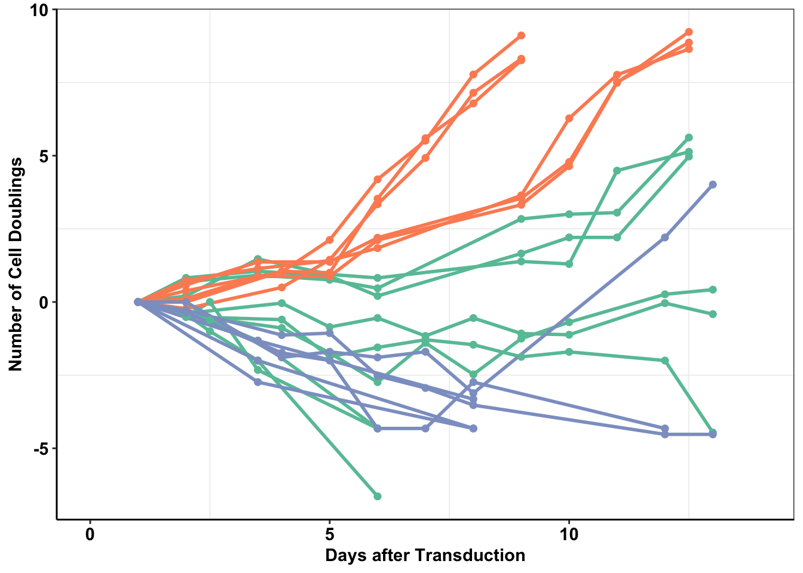
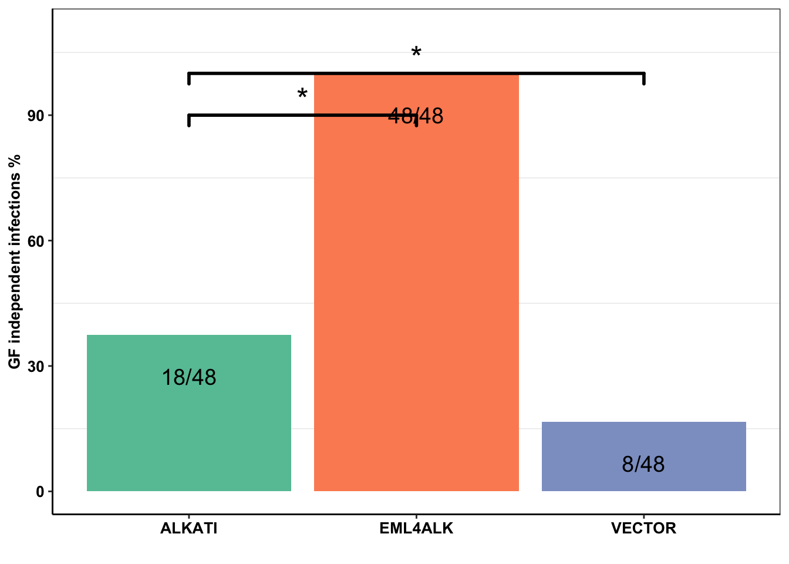
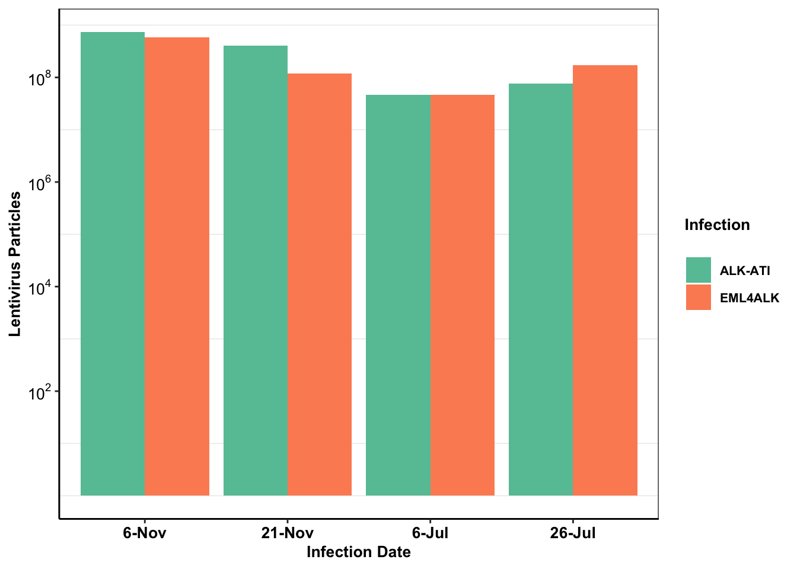

baf3_alkati_transformations
Haider Inam
3/4/2019
Last updated: 2019-03-06
workflowr checks: (Click a bullet for more information)-
✔ R Markdown file: up-to-date
Great! Since the R Markdown file has been committed to the Git repository, you know the exact version of the code that produced these results.
-
✔ Environment: empty
Great job! The global environment was empty. Objects defined in the global environment can affect the analysis in your R Markdown file in unknown ways. For reproduciblity it’s best to always run the code in an empty environment.
-
✔ Seed:
set.seed(20190211)The command
set.seed(20190211)was run prior to running the code in the R Markdown file. Setting a seed ensures that any results that rely on randomness, e.g. subsampling or permutations, are reproducible. -
✔ Session information: recorded
Great job! Recording the operating system, R version, and package versions is critical for reproducibility.
-
Great! You are using Git for version control. Tracking code development and connecting the code version to the results is critical for reproducibility. The version displayed above was the version of the Git repository at the time these results were generated.✔ Repository version: b7d812d
Note that you need to be careful to ensure that all relevant files for the analysis have been committed to Git prior to generating the results (you can usewflow_publishorwflow_git_commit). workflowr only checks the R Markdown file, but you know if there are other scripts or data files that it depends on. Below is the status of the Git repository when the results were generated:
Note that any generated files, e.g. HTML, png, CSS, etc., are not included in this status report because it is ok for generated content to have uncommitted changes.Ignored files: Ignored: .Rhistory Ignored: .Rproj.user/ Untracked files: Untracked: code/alldata_compiler.R Untracked: code/contab_maker.R Untracked: code/mut_excl_genes_datapoints.R Untracked: code/mut_excl_genes_generator.R Untracked: code/quadratic_solver.R Untracked: code/simresults_generator.R Untracked: data/All_Data_V2.csv Untracked: data/alkati_growthcurvedata.csv Untracked: data/alkati_growthcurvedata_popdoublings.csv Untracked: data/alkati_melanoma_vemurafenib_figure_data.csv Untracked: data/all_data.csv Untracked: data/tcga_luad_expression/ Untracked: data/tcga_skcm_expression/ Untracked: docs/figure/Filteranalysis.Rmd/ Untracked: output/alkati_filtercutoff_allfilters.csv Untracked: output/alkati_luad_exonimbalance.pdf Untracked: output/alkati_mtn_pval_fig2B.pdf Untracked: output/alkati_skcm_exonimbalance.pdf Untracked: output/all_data_luad.csv Untracked: output/all_data_luad_egfr.csv Untracked: output/all_data_skcm.csv Untracked: output/baf3_alkati_figure_deltaadjusted_doublings.pdf Untracked: output/baf3_barplot.pdf Untracked: output/baf3_elisa_barplot.pdf Untracked: output/egfr_luad_exonimbalance.pdf Untracked: output/fig2b2_filtercutoff_atinras_totalalk.pdf Untracked: output/fig2b_filtercutoff_atibraf.pdf Untracked: output/fig2b_filtercutoff_atinras.pdf Untracked: output/luad_alk_exon_expression.csv Untracked: output/luad_egfr_exon_expression.csv Untracked: output/melanoma_vemurafenib_fig.pdf Untracked: output/skcm_alk_exon_expression.csv
library(ggsignif)
library(ggplot2)
library(knitr)
library(dplyr)
Attaching package: 'dplyr'The following objects are masked from 'package:stats':
filter, lagThe following objects are masked from 'package:base':
intersect, setdiff, setequal, unionlibrary(tictoc)
library(foreach)
library(doParallel)Loading required package: iteratorsLoading required package: parallelsource("code/alldata_compiler.R")
source("code/contab_maker.R")
######################Cleanup for GGPlot2#########################################
cleanup=theme_bw() +
theme(plot.title = element_text(hjust=.5),
panel.grid.major = element_blank(),
panel.grid.major.y = element_blank(),
panel.background = element_blank(),
axis.line = element_line(color = "black"))ALKATI does not seem to be sufficient to make Baf3s growth factor independent
Displaying the population doublings of ALKATI, EML4ALK, and Vector over time
Please not that while we performed a total of 48 ALKATI transductions, we only counted the first 9 transductions.
library(ggplot2)
library(reshape2)
library(Hmisc)Loading required package: latticeLoading required package: survivalLoading required package: Formula
Attaching package: 'Hmisc'The following objects are masked from 'package:dplyr':
src, summarizeThe following objects are masked from 'package:base':
format.pval, unitscleanup=theme_bw() +
theme(plot.title = element_text(hjust=.5),
panel.grid.major = element_blank(),
panel.grid.major.y = element_blank(),
panel.background = element_blank(),
axis.line = element_line(color = "black"))
# setwd("../Box/AlkAti/figures/baf3transformationsfigure/")
baf3data=read.table("data/alkati_growthcurvedata_popdoublings.csv",header=T,stringsAsFactors = F,sep = ",")
###Removing 7th march data because the cells grew a lot in the first day post selection
baf3data=baf3data[!grepl("7-Mar",baf3data$Infection),]
baf3data=baf3data[,c(1:11)]
###If you want only eml4alk and alk ati data, do this:
# baf3data=baf3data[,c(1:8)]
#
baf3data2=melt(baf3data,id.vars = c("Time","Infection"))
baf3data2=baf3data2 %>%
filter(value>=-10)
baf3data2=na.omit(baf3data2)
baf3data2$variable=as.character(baf3data2$variable)
###Transforming counts into actual numbers because these counts represent x1000s
# baf3data2$value=baf3data2$value*1000
###Creating a boolean for Type of infection
baf3data2$type="EML4ALK"
baf3data2$type[grep("alkati",baf3data2$variable,ignore.case = T)]="ALKATI"
baf3data2$type[grep("vector",baf3data2$variable,ignore.case = T)]="VECTOR"
#
#
ggplot(baf3data2,aes(x=Time,y=value,color=type,fill=Infection,shape=variable))+
geom_line(size=3)+
geom_point(size=5,shape=16)+
# scale_y_continuous(limits = c(1,1e8))+
ggtitle("ALK-ATI sporadically promotes growth-factor-independent proliferation")+
xlab("Days after Transduction")+
ylab("Number of Cell Doublings")+
cleanup+
theme(plot.title = element_text(hjust=.5),
text = element_text(size=24,face = "bold"),
axis.title = element_text(face="bold",size="24"),
axis.text=element_text(face="bold",size="24"))+
theme(legend.position="none")+
xlim(0,14)+
scale_colour_brewer(palette="Set2")Warning: The shape palette can deal with a maximum of 6 discrete values
because more than 6 becomes difficult to discriminate; you have 9.
Consider specifying shapes manually if you must have them.Warning: Removed 1 rows containing missing values (geom_path).Warning: Removed 1 rows containing missing values (geom_point).
#Can also make your own palette and color manually. Obtained from http://www.cookbook-r.com/Graphs/Colors_(ggplot2)/
ggsave("output/baf3_alkati_figure_deltaadjusted_doublings.pdf",width = 16, height = 12, units = "in")Warning: The shape palette can deal with a maximum of 6 discrete values
because more than 6 becomes difficult to discriminate; you have 9.
Consider specifying shapes manually if you must have them.Warning: Removed 1 rows containing missing values (geom_path).Warning: Removed 1 rows containing missing values (geom_point).# Mean and standard deviation to grow out:
#Our criteria for cells "growing out" was when they reached two population doublings
#I extracted the number of days it took for ALKATI and EML4ALK samples to reach 2 population doublings by looking at the data of cells growing out.
head(baf3data2) Time Infection variable value type
1 1.0 24-Nov ALKATI1 0.0000000 ALKATI
2 2.0 24-Nov ALKATI1 0.6918777 ALKATI
3 3.5 24-Nov ALKATI1 0.9142701 ALKATI
4 5.0 24-Nov ALKATI1 0.7589919 ALKATI
5 6.0 24-Nov ALKATI1 0.4694853 ALKATI
6 9.0 24-Nov ALKATI1 2.8387191 ALKATI#ALKATI grew out in 9,10, and 11 days.
mean(c(9,10,11))[1] 10sd(c(9,10,11))[1] 1#Eml4ALK grew out in 6,6,6,6,6, and 5 days
mean(c(6,6,6,6,6,10))[1] 6.666667sd(c(6,6,6,6,6,5))[1] 0.4082483Converting the number of infections growing out to a barplot
baf3_alkati_infections=data.frame(cbind(c("EML4ALK","ALKATI","VECTOR"),c(48/48*100,18/48*100,8/48*100)))
colnames(baf3_alkati_infections)=c("Infection_Type","Infection_efficiency")
baf3_alkati_infections$Infection_efficiency=as.numeric(as.character(baf3_alkati_infections$Infection_efficiency))
ggplot(baf3_alkati_infections,aes(x=Infection_Type,y=Infection_efficiency))+
geom_col(aes(fill=Infection_Type))+
scale_fill_brewer(palette="Set2")+
scale_y_continuous(limits = c(0,110),name = "% Infections conferring GF-independence")+
xlab("")+
cleanup+
theme(plot.title = element_text(hjust=.5),
text = element_text(size=24,face = "bold"),
axis.title = element_text(face="bold",size="24"),
axis.text=element_text(face="bold",size="24"))+
theme(legend.position="none")+
geom_text(label = c("48/48","18/48","8/48"),size=10,nudge_y = -10)+
geom_signif(annotations = '*', y_position = 90 ,xmin="ALKATI", xmax="EML4ALK",size = 1,textsize = 10,nudge_y=-10)+
geom_signif(annotations = '*', y_position = 100 ,xmin="ALKATI", xmax="VECTOR",size = 1,textsize = 10,nudge_y=-10)Warning: Ignoring unknown parameters: nudge_y
Warning: Ignoring unknown parameters: nudge_y
ggsave("output/baf3_barplot.pdf",width = 10,height = 8,units = "in")
###Since meeting successful infection vs unsuccesfful infection are categorical variables, I will use the Chi-Sq test
#ALKATI vs EML4ALK Pvalue= 1.707e-10:
chisq.test(data.frame(rbind(c(18,30),c(48,0))))
Pearson's Chi-squared test with Yates' continuity correction
data: data.frame(rbind(c(18, 30), c(48, 0)))
X-squared = 40.776, df = 1, p-value = 1.707e-10#ALKATI vs Vector Pvalue= .038
chisq.test(data.frame(rbind(c(18,30),c(8,40))))
Pearson's Chi-squared test with Yates' continuity correction
data: data.frame(rbind(c(18, 30), c(8, 40)))
X-squared = 4.2725, df = 1, p-value = 0.03873Barplot for P24 Eliza
#####################Barplot for P24 Elisa########################
#Inputting the lenitivirus particles that were calculated using the P24 Eliza
baf3_alkati_elisa=data.frame(cbind(c("EML4ALK","EML4ALK","EML4ALK","EML4ALK","ALKATI","ALKATI","ALKATI","ALKATI"),c("6-Nov","21-Nov","6-Jul","26-Jul","6-Nov","21-Nov","6-Jul","26-Jul"),c(590346562.5,118892812.5,46836562.5,172420312.5,744238125,410720625,46836563,75659063)))
colnames(baf3_alkati_elisa)=c("Infection_Type","Infection_Date","Lentivirus_Particles")
baf3_alkati_elisa$Lentivirus_Particles=as.numeric(as.character(baf3_alkati_elisa$Lentivirus_Particles))
baf3_alkati_elisa$Infection_Date=factor(baf3_alkati_elisa$Infection_Date,levels = (c("6-Nov","21-Nov","6-Jul","26-Jul")))
ggplot(baf3_alkati_elisa,aes(x=Infection_Date,y=Lentivirus_Particles))+
geom_col(aes(fill=Infection_Type),position = "dodge")+
scale_fill_brewer(palette="Set2",name="Infection\n",labels=c("ALK-ATI", "EML4ALK"))+
ylab("Lentivirus Particles")+
xlab("Infection Date")+
cleanup+
theme(plot.title = element_text(hjust=.5),
text = element_text(size=24,face = "bold"),
axis.title = element_text(face="bold",size="24"),
axis.text=element_text(face="bold",size="24",colour = "black"))+
scale_y_continuous(trans = "log",breaks=c(1e2,1e4,1e6,1e8),labels = parse(text = c("10^2","10^4","10^6","10^8")))
ggsave("output/baf3_elisa_barplot.pdf",width = 12,height = 8,units = "in")Another way of displaying Fig 4a using unn
##################Baf3 figure based on raw numbers
baf3data=read.table("data/alkati_growthcurvedata.csv",header=T,stringsAsFactors = F,sep = ",")
# ###Removing 7th march data because the cells grew a lot in the first day post selection
baf3data=baf3data[!grepl("7-Mar",baf3data$Infection),]
baf3data=baf3data[,c(1:11)]
# ###If you want only eml4alk and alk ati data, do this:
# # baf3data=baf3data[,c(1:8)]
#
#
baf3data2=melt(baf3data,id.vars = c("Time","Infection"))
baf3data2=na.omit(baf3data2)
baf3data2$variable=as.character(baf3data2$variable)
# ###Transforming counts into actual numbers because these counts represent x1000s
baf3data2$value=baf3data2$value*1000
# ###Creating a boolean for Type of infection
baf3data2$type="EML4ALK"
baf3data2$type[grep("alkati",baf3data2$variable,ignore.case = T)]="ALKATI"
baf3data2$type[grep("vector",baf3data2$variable,ignore.case = T)]="VECTOR"
# ###We will use the log2 ratio of the starting population to the pop of interest to get the number of doubling of a population
# ###These are called pseudo counts
# ###To avoid the problem of undefined regions when the populations go to 0, we have
ggplot(baf3data2,aes(x=Time,y=value,color=type,fill=Infection,shape=variable))+
geom_line(size=3)+
geom_point(size=5,shape=16)+
scale_y_continuous(trans = "log10")+
ggtitle("ALK-ATI sporadically promotes growth-factor-independent proliferation")+
xlab("Days after Transduction")+
ylab(expression(paste(~Delta,"Cell Number (", ~10^6, ")")))+
cleanup+
theme(plot.title = element_text(hjust=.5),
text = element_text(size=24,face = "bold"),
axis.title = element_text(face="bold",size="24"),
axis.text=element_text(face="bold",size="24"))+
theme(legend.position="none")Warning: The shape palette can deal with a maximum of 6 discrete values
because more than 6 becomes difficult to discriminate; you have 9.
Consider specifying shapes manually if you must have them.
ALKATI is not sufficient to rescue melanoma form a vemurafenib challenge
melanoma_data=read.table("data/alkati_melanoma_vemurafenib_figure_data.csv",header = T,stringsAsFactors = F,sep=",")
# colnames(melanoma_data)=c("dose","skmel_pig","skmel_alkati","g361_pig","g361_alkati")
# colnames(melanoma_data)
melanoma_data2=melt(melanoma_data,id.vars = c("Dose"))
###Coercing skmel28-pig.1, .2, .3 to become the same name.
melanoma_data2$variable[grep("Skmel28.PIG",melanoma_data2$variable)]="Skmel28.PIG"
melanoma_data2$variable[grep("Skmel28.AlkAti",melanoma_data2$variable)]="Skmel28.AlkAti"
melanoma_data2$variable[grep("G361.PIG",melanoma_data2$variable)]="G361.PIG"
melanoma_data2$variable[grep("G361.AlkAti",melanoma_data2$variable)]="G361.AlkAti"
ggplot(melanoma_data2,aes(Dose,value,color=variable))+
stat_summary(fun.y=mean,
geom="point",size=10) +
scale_x_continuous(trans = "log10") +
stat_summary(fun.data = mean_cl_normal,
geom="errorbar",
width=.05)+
xlab("Vemurafenib Dose (uM)") +
ylab("Live Cell Fraction")+
ggtitle("Dose-Response of ALK-ATI \nin Melanoma to BRAF inhibitor")+
scale_color_manual(name="Cell Line", labels=c("\nSkmel-28 PIG","\nSkmel-28 ALKATI","\nG361 PIG","\nG361 ALKATI"),values=c("#efbc04","red","#19a4ef","#3a1aef"))+
cleanup+
theme(plot.title = element_text(hjust=.5),text = element_text(size=30,face="bold"),axis.title = element_text(face="bold",size="26",color="Black"),axis.text=element_text(face="bold",size="26",color="Black"))ggsave("output/melanoma_vemurafenib_fig.pdf",width = 16, height = 12, units = "in")
###Testing whether ALKATI has a different IC50 than vector
ks.test(melanoma_data2$value[melanoma_data2$variable=="Skmel28.AlkAti"],melanoma_data2$value[melanoma_data2$variable=="Skmel28.PIG"])
Two-sample Kolmogorov-Smirnov test
data: melanoma_data2$value[melanoma_data2$variable == "Skmel28.AlkAti"] and melanoma_data2$value[melanoma_data2$variable == "Skmel28.PIG"]
D = 0.11111, p-value = 0.9974
alternative hypothesis: two-sidedks.test(melanoma_data2$value[melanoma_data2$variable=="G361.AlkAti"],melanoma_data2$value[melanoma_data2$variable=="G361.PIG"])
Two-sample Kolmogorov-Smirnov test
data: melanoma_data2$value[melanoma_data2$variable == "G361.AlkAti"] and melanoma_data2$value[melanoma_data2$variable == "G361.PIG"]
D = 0.18519, p-value = 0.7537
alternative hypothesis: two-sided#As a proof of principle showing that my test works, if I increase the dose response of G361.PIG by 25% gives my significant p.values
ks.test(melanoma_data2$value[melanoma_data2$variable=="G361.AlkAti"],melanoma_data2$value[melanoma_data2$variable=="G361.PIG"]+.25)
Two-sample Kolmogorov-Smirnov test
data: melanoma_data2$value[melanoma_data2$variable == "G361.AlkAti"] and melanoma_data2$value[melanoma_data2$variable == "G361.PIG"] + melanoma_data2$value[melanoma_data2$variable == "G361.AlkAti"] and 0.25
D = 0.40741, p-value = 0.02167
alternative hypothesis: two-sided###P-Values: 0.99 for Skmel28, and 0.75 for G361s, showing that the ALKATI distributions were not significantly different.Session information
sessionInfo()R version 3.5.2 (2018-12-20)
Platform: x86_64-apple-darwin15.6.0 (64-bit)
Running under: macOS Mojave 10.14.3
Matrix products: default
BLAS: /Library/Frameworks/R.framework/Versions/3.5/Resources/lib/libRblas.0.dylib
LAPACK: /Library/Frameworks/R.framework/Versions/3.5/Resources/lib/libRlapack.dylib
locale:
[1] en_US.UTF-8/en_US.UTF-8/en_US.UTF-8/C/en_US.UTF-8/en_US.UTF-8
attached base packages:
[1] parallel stats graphics grDevices utils datasets methods
[8] base
other attached packages:
[1] bindrcpp_0.2.2 Hmisc_4.2-0 Formula_1.2-3
[4] survival_2.43-3 lattice_0.20-38 reshape2_1.4.3
[7] doParallel_1.0.14 iterators_1.0.10 foreach_1.4.4
[10] tictoc_1.0 dplyr_0.7.8 knitr_1.21
[13] ggplot2_3.1.0 ggsignif_0.4.0
loaded via a namespace (and not attached):
[1] Rcpp_1.0.0 assertthat_0.2.0 rprojroot_1.3-2
[4] digest_0.6.18 R6_2.3.0 plyr_1.8.4
[7] backports_1.1.3 acepack_1.4.1 evaluate_0.12
[10] pillar_1.3.1 rlang_0.3.1 lazyeval_0.2.1
[13] data.table_1.12.0 rstudioapi_0.9.0 whisker_0.3-2
[16] R.utils_2.7.0 R.oo_1.22.0 rpart_4.1-13
[19] Matrix_1.2-15 checkmate_1.9.1 rmarkdown_1.11
[22] labeling_0.3 splines_3.5.2 stringr_1.3.1
[25] foreign_0.8-71 htmlwidgets_1.3 munsell_0.5.0
[28] compiler_3.5.2 xfun_0.4 pkgconfig_2.0.2
[31] base64enc_0.1-3 htmltools_0.3.6 nnet_7.3-12
[34] tidyselect_0.2.5 tibble_2.0.1 gridExtra_2.3
[37] htmlTable_1.13.1 workflowr_1.1.1 codetools_0.2-16
[40] crayon_1.3.4 withr_2.1.2 R.methodsS3_1.7.1
[43] grid_3.5.2 gtable_0.2.0 git2r_0.24.0
[46] magrittr_1.5 scales_1.0.0 stringi_1.2.4
[49] latticeExtra_0.6-28 RColorBrewer_1.1-2 tools_3.5.2
[52] glue_1.3.0 purrr_0.3.0 yaml_2.2.0
[55] colorspace_1.4-0 cluster_2.0.7-1 bindr_0.1.1 This reproducible R Markdown analysis was created with workflowr 1.1.1